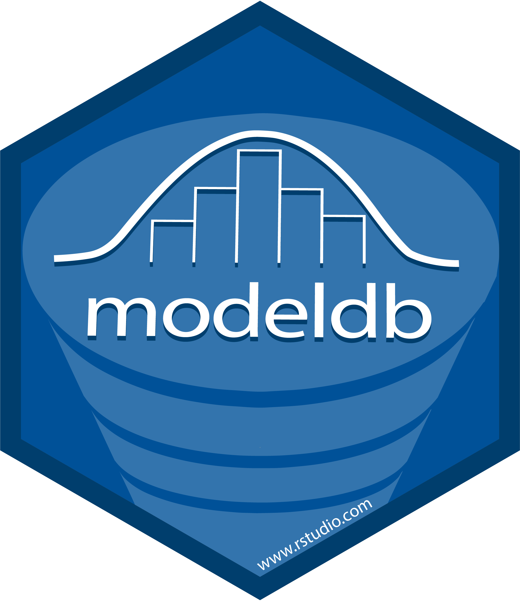

Changelog
Source:NEWS.md
modeldb 0.2.3
CRAN release: 2022-08-16
- Re-licensed package from GPL-3 to MIT. All copyright holders are RStudio employees and give consent.
modeldb 0.2.1
CRAN release: 2020-02-07
- Uses
dplyr::tbl_vars()for column name extraction to instead ofcolnames()
modeldb 0.2.0
CRAN release: 2019-07-20
Adds
as_parsed_model()support for regression modelsFixes compatability issues with
rlanganddplyr
modeldb 0.1.2
CRAN release: 2019-03-02
Removes pipes and other dplyr dependencies from internal
mlr()functionConsolidates duplicated database operations in
mlr()Fixes an issue in
simple_kmeans_db()when specifying variables
modeldb 0.1.1
CRAN release: 2019-01-07
Bug fixes
- Fixes dependency issue with
tidypredictby removingas_parsed_model(). The function will be moved totidypredictin its next version.